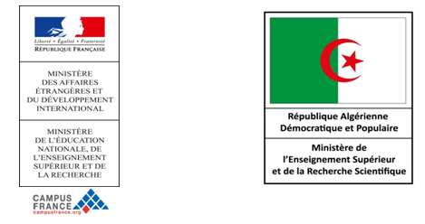

-
Programme Erasmus+ mobilité internationale de crédits K107 entre l’Université d’Oran 1 et l’Université de Grenade - Espagne.
Erasmus + est un programme financé par l'Union européenne et proposant des mesures destinées à soutenir les activités européennes des établissements d'enseignement supérieur, notammentl'échange d'étudiants...
Lire la suite -
CRÉATION DE DOCUMENTS SCIENTIFIQUES AVEC LATEX
Atelier 2.1 : Systèmes d'information: Rédaction scientifique et gestion d'une publication en ligne (Formation permanente). Du 21 mai 2017 au 23 mai 2017. Clôture des candidatures le 17 mai 2017. Lieu : Campus Numérique Francophone Partenaire d'Oran.
Public
Cette formation s'adresse aux :
personnes qui devront préparer des articles scientifiques et des publications
en ligne à l'échelle locale, régionale ou internationale
lire la suite -
CRÉATION DE SITES WEB DYNAMIQUES AVEC LE CMS JOOMLA
Atelier 2.2 : Systèmes d'information: création et gestion de site dynamique (Formation permanente). Du 14 mai 2017 au 16 mai 2017. Clôture des candidatures le 29 avril 2017. Lieu : Campus Numérique Francophone Partenaire d'Oran.
Public
ette formation s'adresse aux : * personnes dès à présent (ou futurs) responsables du développement et de la réalisation professionnels de sites Internet dynamiques qui souhaitent participer à l'extension des technologies de l'information à l'échelle de leur institution ; * personnels d'encadrement des universités ; administrateurs réseaux, webmestres, documentalistes ayant une expérience de création de site...
Lire la suite -

-
PHC MAGHREB 2018
Appel à candidatures
Les trois Partenariats Hubert Curien (PHC) du Maghreb (PHC franco-algérien «Tassili», PHC franco-tunisien «Utique» et PHC franco-marocain «Toubkal») encouragent à travers le PHC Maghreb les coopérations multilatérales en finançant conjointement des projets régionaux impliquant les 3 pays du Maghreb et la France. Ces projets sont financés pour une durée de 3 ans..
visiter -
Programme Tassili 2018

Appel à candidateures -
PHC MAGHREB 2018
Appel à candidatures
Les trois Partenariats Hubert Curien (PHC) du Maghreb (PHC franco-algérien «Tassili», PHC franco-tunisien «Utique» et PHC franco-marocain «Toubkal») encouragent à travers le PHC Maghreb les coopérations multilatérales en finançant conjointement des projets régionaux impliquant les 3 pays du Maghreb et la France. Ces projets sont financés pour une durée de 3 ans..
visiter -
APPEL A CANDIDATEURES
PROGRAMME DE BOURSE ERASMUS + MOBILITE INTERNATIONALE DE CREDITS(EMIC)
lire la suite
Vous etres étudint ou personnel universitaire ?
Effectuez une mobilité à l'Université de Perpignan(france) pour l'année 2017/2018 -
PROGRAMME PROFAS B+ AU TITRE DE L'ANNÉE 2017/2018